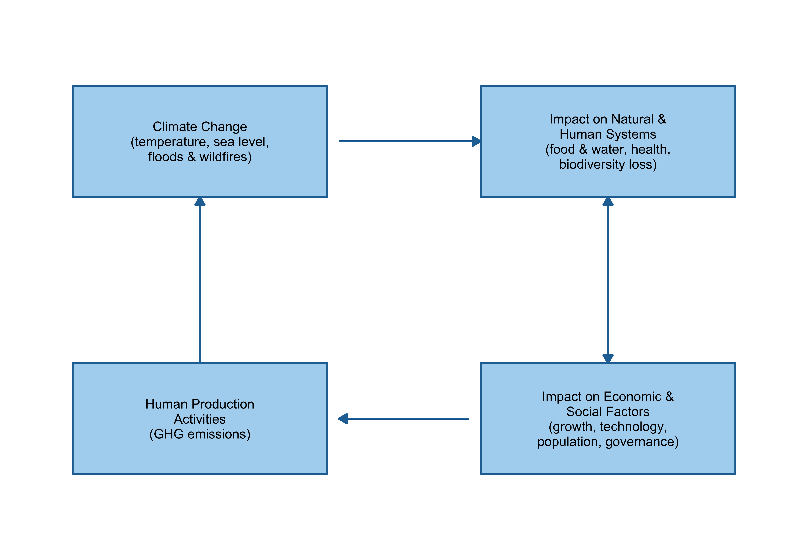
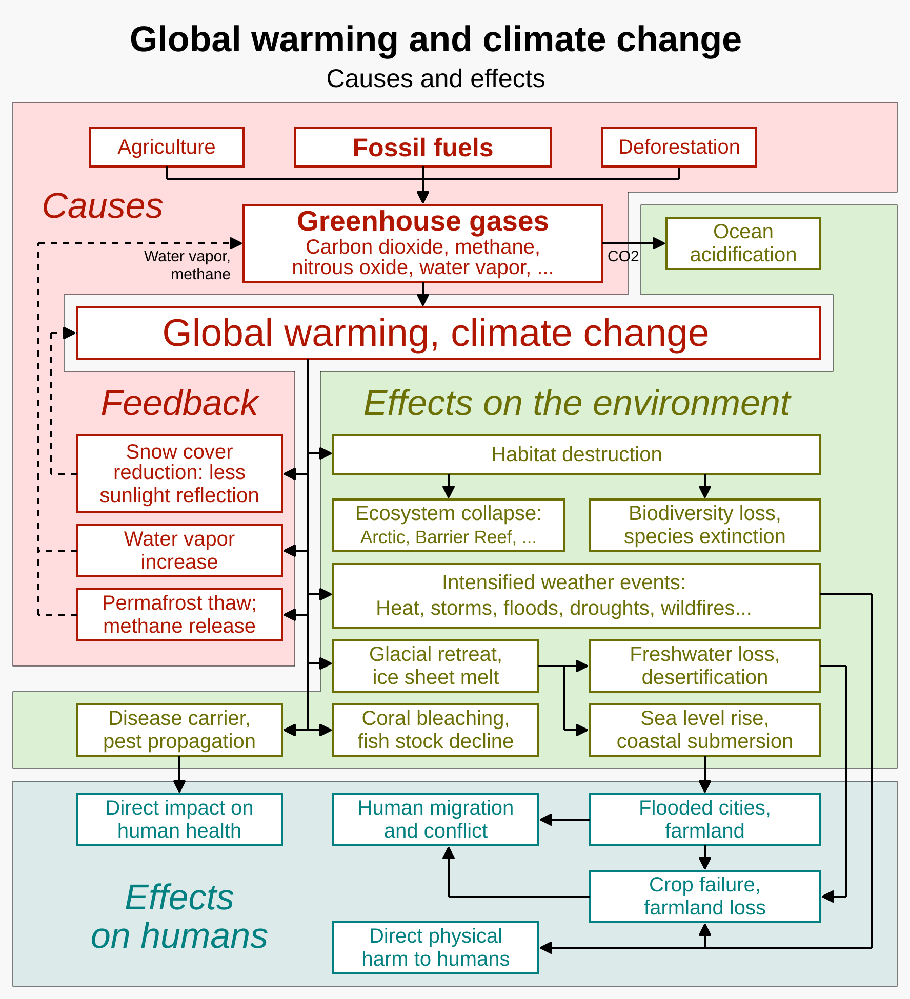
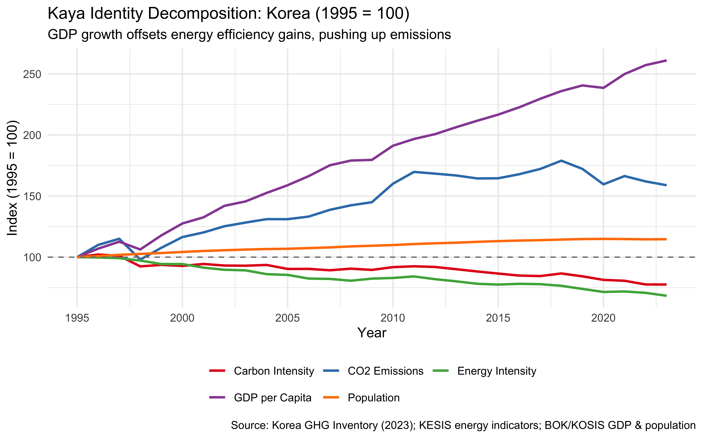
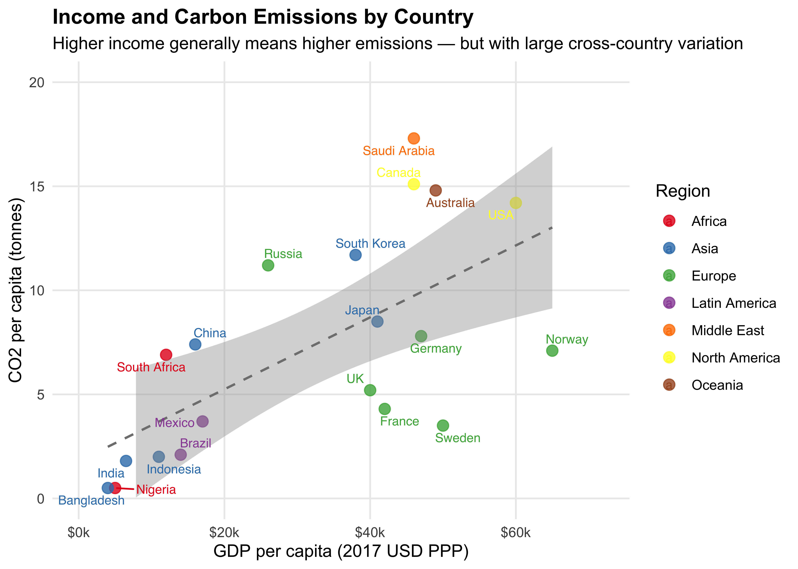
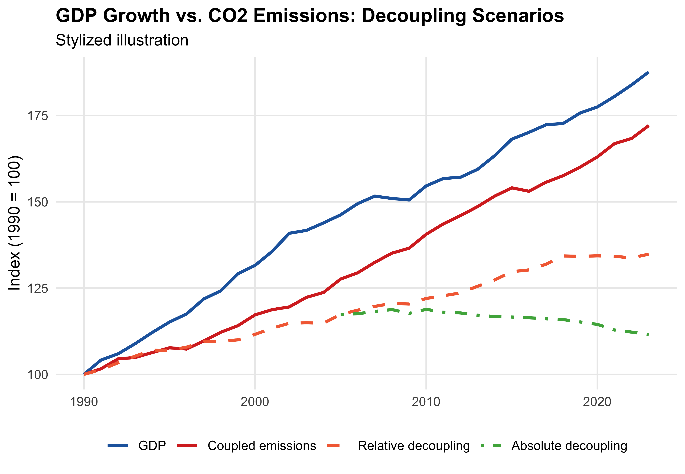

기후와 경제의 연결
기후와 경제의 양방향 관계
이 책 전체를 관통하는 하나의 그림이 있다면 바로 이것이다. 인간의 경제활동은 온실가스를 배출하고, 배출은 기후를 변화시키며, 기후변화는 다시 생태계와 인간 사회에 영향을 미치고, 그 영향은 결국 경제 그 자체로 되돌아온다. 기후와 경제는 일방적인 인과관계가 아니라 닫힌 고리(feedback loop)로 연결되어 있다. 이 장의 나머지 절들—경제학이 왜 이 문제에 관심을 갖는지, 어떻게 사고해왔는지, 어떤 도구로 분석하는지—은 모두 이 하나의 고리를 서로 다른 각도에서 들여다보는 것에 지나지 않는다.
Figure 3.1 은 이 고리의 물리적 절반을 상세히 보여준다. 농업·화석연료·산림 벌채라는 인간 활동이 온실가스(\(\text{CO}_2\), \(\text{CH}_4\), \(\text{N}_2\text{O}\), 수증기)를 배출하고, 이것이 지구온난화로 이어지며, 온난화는 다시 눈덮임 감소·수증기 증가·영구동토 융해 같은 양(+)의 되먹임(positive feedback)을 통해 스스로를 증폭시킨다. 그 결과는 인간의 건강과 이주, 그리고 생태계·해수면·작물 수확 전반에 걸친 광범위한 영향으로 나타난다.

그런데 이 그림에는 정작 경제라는 단어가 등장하지 않는다. 인간 활동이 배출의 출발점으로만 등장할 뿐, 그 활동 자체가 소득·기술·인구·제도라는 경제·사회적 요인의 산물이라는 점, 그리고 기후변화의 영향이 다시 그 요인들을 바꾸어 미래의 배출에 영향을 준다는 점은 드러나지 않는다. Figure 3.2 는 바로 이 고리를 경제학의 언어로 닫는다.
두 그림을 겹쳐 읽으면 이 장의 지도가 완성된다. 왼쪽 아래(인간 생산활동)에서 출발해 시계 방향으로 한 바퀴 도는 이 고리에서, “경제** \(\to\) 기후” 구간(생산활동이 배출을 낳는 경로)은 카야 항등식·환경 쿠즈네츠 곡선·탈동조화라는 도구로, ”기후** \(\to\) 경제” 구간(기후변화가 다시 경제·사회에 충격을 주는 경로)은 농업·노동·인프라·이주라는 채널로 각각 아래에서 자세히 다룬다.
경제 → 기후: 온실가스 배출의 경제적 기원
에너지 부문이 전체 인위적 온실가스 배출의 약 73%를 차지하며, 농업·산림·토지이용 변화가 약 18%, 산업 공정이 나머지를 구성한다. 에너지 부문 내에서는 전력 산업(26%), 산업의 에너지 사용(24.2%), 건물의 에너지 사용(17.5%), 교통(16.2%) 등이 주요 항목이다. 산림 벌채와 토지 이용 변화도 삼림과 토양에 저장된 탄소를 대기로 방출하는 중요한 배출원이다.
결국 온실가스 배출은 인구, 소득, 에너지 사용, 에너지원 선택이라는 경제적 변수들의 산물이다. 이 관계를 체계적으로 분해하는 도구가 카야 항등식이다.
카야 항등식(Kaya Identity)은 \(\text{CO}_2\) 배출량을 네 요인의 곱으로 분해한다:
\[\text{CO}_2 = \underbrace{\frac{\text{CO}_2}{E}}_{\text{탄소집약도}} \times \underbrace{\frac{E}{\text{GDP}}}_{\text{에너지집약도}} \times \underbrace{\frac{\text{GDP}}{P}}_{\text{1인당 소득}} \times \underbrace{P}_{\text{인구}}\]
이 분해는 배출을 줄이는 경로가 네 가지임을 보여준다. 에너지 탄소집약도를 낮추거나(재생에너지 전환), 에너지 효율을 높이거나(에너지집약도 감소), 소득 성장을 억제하거나, 인구를 줄이는 것이다.
현실에서 사회는 소득 성장이나 인구 감소를 기후 정책으로 선택하지 않는다. 따라서 기후 정책은 탄소집약도와 에너지집약도를 줄이는 방향으로 집중된다.
양변에 로그를 취하고 시간에 대해 미분하면 배출 증가율을 네 요인의 증가율 합으로 분해할 수 있다.
\[\frac{\dot{M}}{M} = \frac{\dot{P}}{P} + \frac{\dot{Y}/P}{Y/P} + \frac{\dot{E}/Y}{E/Y} + \frac{\dot{M}/E}{M/E}\]
여기서 \(M\)은 \(\text{CO}_2\) 배출량, \(P\)는 인구, \(Y\)는 GDP, \(E\)는 1차 에너지 공급량이다. 역사적으로 에너지 집약도(\(E/Y\))는 꾸준히 하락해왔다. 그러나 소득 성장이 에너지 효율 개선을 상쇄하여 총 배출량은 증가해왔다. 탄소 중립 달성을 위해서는 탄소 집약도(\(M/E\))의 빠른 하락이 불가피하며, 이는 에너지 전환(재생에너지, 수소 등)을 통해서만 가능하다.
한국의 실제 통계로 카야 항등식 요인을 분해하면 소득 성장과 효율 개선의 상쇄 관계를 확인할 수 있다(Figure 3.3). 인구\(\cdot\)GDP는 국가 온실가스 인벤토리와 한국은행\(\cdot\)통계청 자료를, 1차에너지공급은 에너지경제연구원(KESIS) 자료를, \(\text{CO}_2\) 배출량은 국가 온실가스 인벤토리의 에너지 부문 배출량을 사용했다. 1995년을 100으로 놓고(두 자료의 공통 구간인 1995~2023년) 각 요인의 변화를 지수화하면, 에너지 집약도(\(E/Y\))는 꾸준히 낮아졌지만 1인당 소득(\(Y/P\))이 그보다 빠르게 상승하면서 \(\text{CO}_2\) 배출량(\(M\))을 위로 끌어올렸음이 한눈에 드러난다. (그림을 생성한 R 코드는 이 장 말미의 부록에 수록했다.)

Figure 3.4 는 주요국의 1인당 GDP와 1인당 \(\text{CO}_2\) 배출량의 관계를 보여준다. 대체로 소득이 높을수록 배출량이 많지만, 비슷한 소득 수준에서도 국가별로 배출 집약도가 크게 갈린다는 점에 주목할 만하다.

경제 성장과 환경 오염의 관계에 관한 또 다른 주요 가설은 환경 쿠즈네츠 곡선(Environmental Kuznets Curve, EKC)이다. 이 가설은 소득과 오염의 관계가 역-U자형을 보인다고 주장한다. 저소득 단계에서는 성장할수록 오염이 증가하지만, 일정 소득 수준을 넘으면 오히려 오염이 감소한다는 것이다.
\[\text{오염} = \alpha + \beta_1 \cdot Y + \beta_2 \cdot Y^2 + \varepsilon \quad (\hat\beta_1 > 0, \hat\beta_2 < 0)\]
EKC 가설이 성립하는 배경으로는 다음이 제시된다. 소득이 높아질수록 주민들이 더 나은 환경을 요구하고 정치적으로 환경 규제를 지지한다. 서비스업 비중이 높아지며 산업 구조가 탈탄소화된다. 더 나은 기술과 효율적인 생산 방식이 도입된다.
ImportantEKC 가설의 한계
\(\text{CO}_2\) 배출에 EKC 가설은 잘 성립하지 않는다. 이유는 세 가지다.
첫째, 선진국이 오염 집약적 산업을 개발도상국으로 이전했을 뿐—글로벌 배출은 감소하지 않았다(탄소 누출).
둘째, 역사적으로 선진국의 배출 감소는 자연스러운 발전 결과가 아니라 명시적인 기후 정책 덕분이었다.
셋째, 기후변화는 지역 오염과 달리 전 지구적 스톡(stock) 문제다. 지역 오염은 소득 증가에 따라 자연히 감소할 수 있지만, 대기 중 누적 \(\text{CO}_2\)는 그렇지 않다.
따라서 EKC를 근거로 “경제가 발전하면 기후 문제는 저절로 해결된다”는 주장은 경험적으로 지지되지 않는다.
탈동조화(decoupling)란 경제 성장과 온실가스 배출의 연결 고리가 약해지는 현상이다. 상대적 탈동조화(relative decoupling)는 배출량은 계속 증가하지만 증가 속도가 GDP 성장률보다 느린 경우, 즉 GDP 단위당 배출량(탄소집약도)이 감소하는 상태를 말한다. 절대적 탈동조화(absolute decoupling)는 경제가 성장하는 동시에 배출량 자체가 감소하는 경우로, 기후 목표 달성을 위해 필요한 상태다.
현재 대부분의 선진국은 상대적 탈동조화에 도달했다. 일부 국가(영국, 독일, 스웨덴 등)는 절대적 탈동조화도 달성했다. 그러나 전 지구적 배출량은 여전히 증가 추세다(Figure 3.5).

이 절 전체가 보여주는 배출-소득 관계는 결국 두 힘의 줄다리기로 요약된다. 경제가 커질수록 에너지 사용과 배출이 늘어나는 성장 효과(scale effect)와, 효율 개선·산업구조 변화·청정기술 도입을 통해 배출을 줄이는 기술·구성 효과(technique and composition effect)다. 카야 항등식의 에너지집약도·탄소집약도 하락이 바로 이 기술·구성 효과의 다른 이름이며, 이 두 힘의 상대적 크기가 한 나라가 상대적 탈동조화에 머무를지 절대적 탈동조화로 나아갈지를, 그리고 궁극적으로 기후 정책의 경제적 비용을 결정한다.
기후 → 경제: 되돌아오는 충격
이제 고리의 반대편, 기후변화가 다시 경제에 남기는 충격을 살펴보자. 기후변화는 단순히 환경 문제가 아니라 거시경제 변수에 직접 영향을 미친다.
농업 생산성: 기온 상승과 강수 패턴 변화는 작물 수확량을 변화시키고, 이는 식량 가격과 농촌 소득에 영향을 준다. 특히 열대·아열대 지역 개발도상국에서 피해가 집중된다.
노동 생산성: Dell, Jones, and Olken(2012)의 연구에 따르면 기온이 1°C 상승할 때 개발도상국 GDP 성장률이 약 1.2%p 하락한다. 고온 환경에서 옥외 노동의 생산성이 급감하기 때문이다.
인프라 및 자본: 해수면 상승, 홍수, 폭풍 강도 증가는 해안 인프라·부동산·제조 설비를 위협한다. 이는 자본 스톡의 감가상각을 가속화한다.
이주와 갈등: 기후 충격이 심각한 지역에서 인구 이동이 촉발되며, 이는 수용국의 노동시장·사회 서비스·정치 안정에 영향을 미친다.
이 네 가지 경로 하나하나가 바로 Figure 3.2 의 “자연·인간 시스템에 대한 영향”이 “경제·사회적 요인에 대한 영향”으로 넘어가는 구체적인 메커니즘이며, 그 경제적 요인은 다시 미래의 생산활동과 배출 결정에 영향을 미치면서 고리를 닫는다.
경제학은 기후변화에서 무엇을 묻는가
앞서 본 고리는 기후변화가 왜 자연과학인 동시에 경제학의 문제인지를 보여준다. 기후변화를 일으키는 것도, 그 피해를 감당하는 것도, 그리고 그것을 해결할 수단을 선택하는 것도 결국 인간의 행동과 선택이다. 그리고 희소한 자원을 놓고 인간이 내리는 선택과 그 결과를 분석하는 일이야말로 경제학의 본령이다.
같은 현실, 다른 질문
기후과학자와 기후 경제학자는 같은 지구, 같은 데이터를 바라본다. 그러나 두 사람이 그 앞에서 던지는 질문은 사뭇 다르다.
기후과학자는 물리적 인과관계를 묻는다. 대기 중 이산화탄소 농도가 산업화 이전의 두 배가 되면 지구 평균기온은 몇 도나 오르는가? 그때 해수면은 얼마나 상승하며, 극단적 폭염과 홍수의 빈도는 어떻게 달라지는가? 이 질문들의 답은 원칙적으로 관측과 물리 법칙으로 확정할 수 있는 문제다.
기후 경제학자는 여기서 한 걸음 더 나아가, 그 물리적 변화가 인간 사회에 남기는 결과와 그에 대한 대응을 묻는다. 기온이 2°C 오르면 그로 인한 피해는 화폐 단위로 환산하면 얼마인가? 그 피해를 줄이기 위해 우리는 지금 얼마를 써야 하며, 감축의 편익이 그 비용을 정당화하는 지점은 어디인가? 같은 감축 목표를 가장 적은 비용으로 달성하는 정책 수단은 무엇인가? 그리고 그 부담은 누가 져야 하는가? 요컨대 과학자가 “무슨 일이 일어나는가”를 묻는다면, 경제학자는 “그래서 우리는 무엇을, 얼마나, 어떻게 해야 하는가”를 묻는다.
Note기후 경제학의 세 가지 핵심 질문
- 얼마나 감축할 것인가? (최적 감축 수준, optimal abatement) — 비용-편익 분석
- 어떻게 감축할 것인가? (정책 수단 선택) — 탄소세 vs. 배출권거래제 vs. 규제
- 누가 부담할 것인가? (분배와 형평성) — 세대 간, 국가 간, 소득 집단 간
이 세 가지 질문—얼마나, 어떻게, 누가—은 단순한 나열이 아니라 이 책 전체를 떠받치는 뼈대다. 첫 번째 질문은 기후 피해와 감축 비용을 같은 저울에 올려 견주는 문제로, 이 책의 5~9장이 이에 답한다. 두 번째 질문은 탄소세·배출권거래제·직접규제 가운데 무엇이 목표를 가장 효율적으로 달성하는가의 문제로 10~11장에서 다룬다. 세 번째 질문은 현재와 미래 세대 사이, 선진국과 개발도상국 사이, 그리고 고소득층과 저소득층 사이에 비용과 편익을 어떻게 나눌 것인가의 문제로, 7장·9장·15장을 관통한다.
있는 그대로의 세계와 있어야 할 세계
경제학이 던지는 질문은 성격이 전혀 다른 두 종류로 나뉜다. 이 구분을 놓치면 기후 경제학의 숱한 논쟁이 왜 그토록 좁혀지지 않는지 이해할 수 없다.
첫째는 서술적(positive) 경제학으로, 세계가 실제로 어떻게 작동하는지를 분석한다. “탄소세를 1톤당 5만 원 부과하면 휘발유 소비는 몇 퍼센트나 줄어드는가?”, “경제가 성장하면 온실가스 배출은 반드시 함께 늘어나는가?”와 같은 물음이 여기에 속한다. 이런 질문은 원칙적으로 데이터와 모형으로 검증할 수 있는 사실의 문제다. 답이 틀렸다면 증거를 들어 반박할 수 있다.
둘째는 규범적(normative) 경제학으로, 세계가 어떠해야 하는지를 판단한다. “탄소세는 얼마로 정해야 옳은가?”, “우리 세대는 아직 태어나지도 않은 미래 세대를 위해 지금 얼마를 희생해야 하는가?”와 같은 물음이 그것이다. 이런 질문은 사실을 아무리 정확히 안다 해도 그것만으로는 답할 수 없다. 그 밑바닥에 무엇이 공정한가, 미래를 얼마나 중시할 것인가 같은 가치 판단이 깔려 있기 때문이다.
이 구분이 왜 결정적인가? 기후 정책을 둘러싼 가장 유명한 대립—뒤에서 살펴볼 스턴과 노드하우스의 논쟁—조차, 알고 보면 대부분 데이터의 다툼이 아니라 가치의 다툼이기 때문이다. 두 경제학자가 같은 기후과학을 받아들이면서도 정반대의 처방을 내놓는다면, 그 차이는 십중팔구 규범적 전제에서 갈린다. 경제학은 “미래 세대를 얼마나 중요하게 여겨야 하는가”라는 물음에 스스로 정답을 제시하지 못한다. 다만 서로 다른 가치 선택이 각각 어떤 정책 결론으로 이어지는지를 투명하게 드러내 보여줄 뿐이다. 경제학이 가진 이 힘과 한계를 함께 이해하는 것이 기후 경제학을 올바르게 읽는 출발점이다.
경제학은 기후변화를 어떻게 사고해 왔는가
기후변화에 대한 경제학적 사고는 최근에 갑자기 등장한 것이 아니다. 그 뿌리는 100년 전으로 거슬러 올라가며, 그 오랜 계보 위에서 몇몇 핵심 인물이 오늘날 우리가 쓰는 개념의 틀을 하나씩 놓았다. 이들의 문제의식을 따라가 보면, 앞 절에서 구분한 서술적 질문과 규범적 질문이 실제 학문의 역사 속에서 어떻게 얽혀 왔는지가 자연스럽게 드러난다.
출발점은 아서 피구(Arthur Pigou)다. 그는 1920년 저서 『후생경제학(The Economics of Welfare)』에서, 공장의 매연처럼 한 경제주체의 행동이 아무런 대가 없이 타인에게 피해를 입히는 현상을 외부성(externality)으로 개념화했다 (Pigou 1920). 시장에 맡겨두면 이런 피해는 가격에 반영되지 않아 과잉 생산·과잉 배출로 이어진다. 피구의 처방은 명료했다. 그 피해액만큼 세금을 물려 비용을 유발자에게 ’내부화’시키라는 것이다. 오늘날 탄소세의 이론적 원형이 바로 이 피구세(Pigouvian tax)다. ’기후변화’라는 말이 쓰이기 반세기도 더 전에, 문제를 다룰 개념적 도구는 이미 마련되어 있었던 셈이다.
피구가 도구를 벼렸다면, 윌리엄 노드하우스(William Nordhaus)는 그것을 기후 문제에 정면으로 적용했다. 그는 1970년대부터 기후를 경제 모형 안으로 끌어들여, 지구 평균기온 상승을 산업화 이전 대비 2°C 이내로 억제해야 한다는 기준을 일찍이 제시했다. 나아가 그는 지구 탄소순환·기온 변화·경제 성장·기후 피해를 하나의 방정식 체계로 엮은 통합평가모형(Integrated Assessment Model, IAM)인 DICE 모형을 개발했다. 이 모형은 “이산화탄소 1톤을 더 배출할 때 사회가 치르는 피해는 얼마인가”라는 물음—즉 탄소의 사회적 비용(social cost of carbon)—에 구체적 숫자로 답하려는 최초의 본격적 시도였다. 노드하우스는 이 공로로 2018년 노벨 경제학상을 받았다 (Nordhaus 2017). (DICE 모형은 12장에서 자세히 다룬다.)
노드하우스의 모형이 곧 합의를 뜻한 것은 아니었다. 니컬러스 스턴(Nicholas Stern)은 2006년 영국 정부에 제출한 방대한 보고서 「스턴 리뷰(Stern Review)」에서, 기후변화의 피해가 노드하우스의 추정보다 훨씬 크며 따라서 지금 당장 과감하게 감축하는 것이 경제적으로도 정당하다고 주장했다 (Stern 2007). 흥미롭게도 두 사람이 본 기후과학은 크게 다르지 않았다. 그럼에도 결론이 갈린 이유는 뒤의 콜아웃에서 보듯 대체로 규범적 전제, 특히 미래를 얼마나 중시하느냐의 차이에 있었다. 이 보고서는 기후 문제를 학계의 울타리를 넘어 대중과 정치의 의제로 단숨에 끌어올렸다.
마지막으로 마틴 바이츠먼(Martin Weitzman)은 논쟁의 초점을 ’평균적 피해’에서 ’최악의 가능성’으로 옮겼다. 그는 발생 확률은 낮지만 일어나면 파국적인 결과—이른바 두꺼운 꼬리(fat tail)—가 기후 문제의 핵심이라고 보았다 (Weitzman 2009). 1장에서 익힌 분포의 언어로 말하면, 기후 리스크의 본질은 분포의 한가운데(평균)가 아니라 좀처럼 얇아지지 않는 양 끝의 꼬리에 있다는 것이다. 이 통찰은 불확실성과 리스크를 다루는 8장의 문제의식으로 이어진다.
하나의 합의: “탄소에 가격을 매겨라”
경제학자들은 웬만한 문제에 대해서는 좀처럼 의견이 모이지 않는 것으로 유명하지만, 기후 정책의 한 가지 처방에서만큼은 놀라울 만큼 한목소리를 낸다. 온실가스 배출에 가격을 매기라는 것이다. 2019년, 28명의 노벨상 수상자를 포함한 3,600명이 넘는 미국 경제학자가 이례적으로 하나의 성명에 서명해 탄소세 도입을 촉구한 것이 그 상징적 장면이다 (Sterner et al. 2024).
왜 하필 ’가격’인가? 시장경제에서 석유나 석탄 같은 사적 재화는 희소해지면 가격이 오르고, 그 신호에 따라 사람들이 알아서 덜 쓰고 대안을 찾는다. 그러나 대기가 이산화탄소를 흡수하는 능력 같은 공공재에는 이런 가격이 존재하지 않는다. 배출자가 자신이 일으키는 피해에 아무런 대가도 치르지 않으므로, 시장은 스스로 배출을 줄일 신호를 만들어내지 못한다. 피구가 100년 전에 지적했듯, 이 ’빠진 가격’을 정책으로 만들어 붙이는 것—탄소세나 배출권거래제—이 시장실패를 바로잡는 가장 직접적인 방법이다. (구체적 수단은 10~11장에서 비교한다.)
“그냥 가격만 매기면 된다”의 함정
그러나 최근 경제학자들은 이 ’탄소에 가격을 매겨라’라는 메시지가 지나치게 단순화되어 전달되어 왔다고 반성한다. 스테르너 등(Sterner et al., 2024)은 이를 “Econ 101” 처방이라 부르며, 현실은 그보다 복잡한 “Econ 102”를 요구한다고 지적한다 (Sterner et al. 2024).
- 시장실패는 하나가 아니다. 기후 문제에는 탄소 외부성만 있는 것이 아니라, 청정기술에 대한 투자 부족, 낡은 기술에 갇혀 벗어나지 못하는 고착(lock-in) 등 여러 실패가 겹쳐 있다. 세금 하나만으로는 이 모두를 교정할 수 없어, 보조금·규제·연구개발 지원 같은 보완 수단이 함께 필요하다.
- 분배와 형평성이 걸려 있다. 탄소 가격은 소득에서 에너지 지출 비중이 큰 저소득층에 상대적으로 더 무거운 부담이 될 수 있다. 걷은 세수를 누구에게 어떻게 되돌려주느냐에 따라 정책의 공정성과 수용성이 크게 달라진다.
- 정치적 수용성이 관건이다. 프랑스의 ‘노란 조끼(Gilets Jaunes)’ 시위처럼, 이론적으로 옳은 탄소세도 국민이 불공정하다고 느끼면 좌초한다. 정부에 대한 신뢰, 세수의 사용처, 도입 속도가 성패를 가른다.
요컨대 탄소 가격은 여전히 기후 정책의 중심축이지만, 그것만으로 충분하지는 않다. “가격을 매겨라”는 출발점이지 종착점이 아니며, 이 책의 나머지 장들은 바로 그 ‘나머지’—어떻게 설계하고, 누가 부담하며, 어떻게 수용을 이끌어낼 것인가—를 다룬다.
기후변화 경제학의 주요 접근법
통합평가모형
통합평가모형(Integrated Assessment Model, IAM)은 기후 시스템과 경제 시스템을 하나의 모형 안에 결합한다. DICE(Dynamic Integrated model of Climate and the Economy, Nordhaus), PAGE, FUND 등이 대표적이다.
IAM은 최적 배출 경로, 탄소의 사회적 비용(SCC), 기후 목표 달성 비용 등을 추정하는 데 사용된다. 그러나 피해 함수의 불확실성, 할인율 가정의 민감성, 임계점(tipping points) 포함 여부 등에서 한계를 갖는다.
계량경제학적 접근
최근에는 기상 데이터와 경제 데이터의 패널을 활용한 계량경제학적 추정이 활발히 이루어지고 있다. 기온·강수량 변화가 농업 생산량, GDP 성장률, 범죄율, 건강 지표에 미치는 영향을 직접 추정한다.
이 접근법은 구조 모형 없이 실제 관측 데이터에서 기후-경제 관계를 추론하므로 불확실성이 낮다는 장점이 있다. 반면, 장기적·비선형적 변화나 사회 적응을 포착하기 어렵다는 한계도 있다.
비용-편익 분석
비용-편익 분석(Cost-Benefit Analysis, CBA)은 기후 정책의 비용(감축 비용)과 편익(회피된 기후 피해)을 화폐 단위로 비교해 최적 정책 수준을 결정한다. SCC가 이 분석의 핵심 투입 변수가 된다.
CBA는 경제적으로 일관성 있는 틀을 제공하지만, 비시장 가치(생태계, 건강, 문화유산)의 화폐화가 어렵고 형평성을 충분히 반영하지 못한다는 비판도 있다.
기후변화 경제학의 로드맵
이 책의 남은 여정은 세 부분으로 구성된다.
Part I. 기후변화는 왜 경제 문제인가(3~4장): 시장 효율성의 기초를 정리한 뒤(3장), 기후변화를 외부효과와 공공재라는 시장실패로 진단한다(4장).
Part II. 기후변화의 비용과 편익(5~9장): 기후 피해의 측정과 가치평가(5장), 감축비용(6장), 할인율과 세대간 형평성(7장), 불확실성과 기후 리스크(8장), 기후 부담의 분배(9장)를 다룬다.
Part III. 기후변화 해결을 위한 경제학적 접근(10~16장): 탄소세(10장), 배출권거래제(11장), 최적 기후정책과 통합평가모형(12장), 적응(13장), 행동경제학(14장), 국제협력과 기후금융(15장), 녹색성장(16장)을 분석한다.
요약
기후와 경제는 하나의 닫힌 고리로 연결되어 있다. 인간의 생산활동이 온실가스 배출을 통해 기후를 변화시키고, 기후변화는 자연·인간 시스템을 거쳐 다시 경제·사회적 요인에 영향을 미치며, 그 영향은 미래의 생산활동으로 되먹임된다.
카야 항등식은 이 고리의 “경제 \(\to\) 기후” 구간을 인구, 소득, 에너지집약도, 탄소집약도로 분해해 감축 경로를 구조화한다. 환경 쿠즈네츠 곡선은 성장이 오염 감소로 이어질 수 있음을 시사하지만, \(\text{CO}_2\)에는 직접 적용되지 않는다. 탈동조화는 성장 효과와 기술·구성 효과의 줄다리기가 실제로 어떻게 나타나는지를 보여주며, “기후 \(\to\) 경제” 구간은 농업·노동·인프라·이주라는 채널로 그 고리를 닫는다.
기후 경제학자들은 IAM, 계량경제 추정, 비용-편익 분석 등 다양한 도구를 사용하여 최적 감축 수준과 정책 수단을 분석한다. 그러나 핵심 쟁점—할인율, 형평성, 불확실성—은 순수한 경제 분석을 넘어 윤리적 판단을 포함한다.
Note토론 질문
탄소집약도를 낮추는 방법(에너지 전환)과 에너지집약도를 낮추는 방법(에너지 효율 개선)은 어떤 장단점이 있는가? 두 경로의 정치경제학적 차이는 무엇인가?
EKC 가설이 지역 대기오염에는 어느 정도 성립하지만 \(\text{CO}_2\)에는 그렇지 않은 이유를 시장실패 프레임으로 설명하라.
기후 정책의 최적 수준을 결정하는 것이 왜 순수한 경제 분석의 문제가 아닌 윤리적 판단의 문제인가?
카야 항등식을 이용해 지난 30년간 한국의 \(\text{CO}_2\) 배출 증가를 네 요인(인구, 1인당 소득, 에너지 집약도, 탄소 집약도)으로 분해해 보라. 어떤 요인이 배출 증가를 주도했고, 어떤 요인이 이를 상쇄했는가? 탄소 중립 달성을 위해 어떤 요인의 변화가 가장 시급한가?
부록: R 코드
이 장의 본문에 등장한 그림을 생성한 R 코드를 정리한다. 각 코드는 해당 그림 번호와 함께 표시되어 있다. (Figure 3.1 은 Wikimedia Commons에서 재사용한 이미지로, R 코드가 없다.)
Figure 3.2 코드
library(ggplot2)
boxes <- data.frame(
id = c("activity", "climate", "impact_nat", "impact_econ"),
x = c(0, 0, 2.5, 2.5),
y = c(0, 1.7, 1.7, 0),
label = c(
"Human Production\nActivities\n(GHG emissions)",
"Climate Change\n(temperature, sea level,\nfloods & wildfires)",
"Impact on Natural &\nHuman Systems\n(food & water, health,\nbiodiversity loss)",
"Impact on Economic &\nSocial Factors\n(growth, technology,\npopulation, governance)"
)
)
hw <- 0.78
hh <- 0.34
arrows <- data.frame(
x = c(0, 0.85, 2.5, 1.65),
y = c(0.34, 1.7, 1.36, 0),
xend = c(0, 1.72, 2.5, 0.85),
yend = c(1.36, 1.7, 0.34, 0),
both = c(FALSE, FALSE, TRUE, FALSE)
)
ggplot() +
geom_rect(data = boxes,
aes(xmin = x - hw, xmax = x + hw, ymin = y - hh, ymax = y + hh),
fill = "#AED6F1", color = "#2471A3", linewidth = 0.6) +
geom_text(data = boxes, aes(x = x, y = y, label = label),
size = 3.1, lineheight = 0.95) +
geom_segment(data = subset(arrows, !both),
aes(x = x, y = y, xend = xend, yend = yend),
arrow = arrow(length = unit(0.22, "cm"), type = "closed"),
linewidth = 0.6, color = "#2471A3") +
geom_segment(data = subset(arrows, both),
aes(x = x, y = y, xend = xend, yend = yend),
arrow = arrow(length = unit(0.22, "cm"), type = "closed", ends = "both"),
linewidth = 0.6, color = "#2471A3") +
coord_fixed(xlim = c(-1.0, 3.5), ylim = c(-0.6, 2.3), clip = "off") +
theme_void()Figure 3.3 코드
library(tidyverse)
library(readxl)
ghg_path <- "Data/korea-kaya-decomposition/korea-ghg-inventory-2023.xlsx"
energy_path <- "Data/korea-kaya-decomposition/korea-energy-indicators.xlsx"
# 인구·GDP: 온실가스 인벤토리 '집약도' 시트 (통계청 장래인구추계, 한국은행 실질GDP)
years_int <- read_excel(ghg_path, sheet = "집약도", range = "C3:AJ3", col_names = FALSE) |> unlist() |> as.numeric()
pop_vec <- read_excel(ghg_path, sheet = "집약도", range = "C18:AJ18", col_names = FALSE) |> unlist() |> as.numeric()
gdp_vec <- read_excel(ghg_path, sheet = "집약도", range = "C9:AJ9", col_names = FALSE) |> unlist() |> as.numeric()
# 에너지 부문 CO2 배출량: 'CO2' 시트 "1. 에너지" 행 (kt CO2-eq)
years_co2 <- read_excel(ghg_path, sheet = "CO2", range = "C4:AJ4", col_names = FALSE) |> unlist() |> as.numeric()
co2_vec <- read_excel(ghg_path, sheet = "CO2", range = "C7:AJ7", col_names = FALSE) |> unlist() |> as.numeric()
# 1차에너지공급(TPES): 에너지경제연구원 KESIS
energy <- read_excel(energy_path, sheet = "데이터") |>
transmute(
year = readr::parse_number(시점),
tpes = `일차에너지공급 (1,000 toe)`
)
korea_kaya <- tibble(year = years_int, pop = pop_vec, gdp = gdp_vec) |>
left_join(tibble(year = years_co2, co2 = co2_vec), by = "year") |>
inner_join(energy, by = "year") |>
filter(year >= 1995, year <= 2023) |>
mutate(
gdp_per_cap = gdp / pop,
energy_intensity = tpes / gdp,
carbon_intensity = co2 / tpes
)
base_year <- korea_kaya |> filter(year == 1995)
korea_kaya |>
mutate(
idx_emission = co2 / base_year$co2 * 100,
idx_pop = pop / base_year$pop * 100,
idx_gdp_per_cap = gdp_per_cap / base_year$gdp_per_cap * 100,
idx_energy_intensity = energy_intensity / base_year$energy_intensity * 100,
idx_carbon_intensity = carbon_intensity / base_year$carbon_intensity * 100
) |>
select(year, starts_with("idx_")) |>
pivot_longer(-year, names_to = "variable", values_to = "index") |>
mutate(variable = recode(variable,
"idx_emission" = "CO2 Emissions",
"idx_pop" = "Population",
"idx_gdp_per_cap" = "GDP per Capita",
"idx_energy_intensity" = "Energy Intensity",
"idx_carbon_intensity" = "Carbon Intensity"
)) |>
ggplot(aes(x = year, y = index, color = variable)) +
geom_line(linewidth = 1) +
geom_hline(yintercept = 100, linetype = "dashed", color = "gray50") +
scale_color_brewer(palette = "Set1") +
labs(
title = "Kaya Identity Decomposition: Korea (1995 = 100)",
subtitle = "GDP growth offsets energy efficiency gains, pushing up emissions",
x = "Year",
y = "Index (1995 = 100)",
color = NULL,
caption = "Source: Korea GHG Inventory (2023); KESIS energy indicators; BOK/KOSIS GDP & population"
) +
guides(color = guide_legend(nrow = 2, byrow = TRUE)) +
theme_minimal(base_size = 12) +
theme(legend.position = "bottom")Figure 3.4 코드
library(tidyverse)
# Representative data: GDP per capita (2017 USD, PPP) vs CO2 per capita (tCO2)
# Source: World Bank / Our World in Data approximations
countries <- tribble(
~country, ~gdp_pc, ~co2_pc, ~region,
"USA", 60000, 14.2, "North America",
"Canada", 46000, 15.1, "North America",
"Australia", 49000, 14.8, "Oceania",
"Germany", 47000, 7.8, "Europe",
"France", 42000, 4.3, "Europe",
"Sweden", 50000, 3.5, "Europe",
"UK", 40000, 5.2, "Europe",
"Japan", 41000, 8.5, "Asia",
"South Korea", 38000, 11.7, "Asia",
"China", 16000, 7.4, "Asia",
"India", 6500, 1.8, "Asia",
"Brazil", 14000, 2.1, "Latin America",
"Mexico", 17000, 3.7, "Latin America",
"South Africa", 12000, 6.9, "Africa",
"Nigeria", 5000, 0.5, "Africa",
"Russia", 26000, 11.2, "Europe",
"Saudi Arabia", 46000, 17.3, "Middle East",
"Norway", 65000, 7.1, "Europe",
"Indonesia", 11000, 2.0, "Asia",
"Bangladesh", 4000, 0.5, "Asia"
)
ggplot(countries, aes(x = gdp_pc, y = co2_pc, color = region, label = country)) +
geom_point(size = 3, alpha = 0.8) +
geom_smooth(aes(group = 1), method = "lm", se = TRUE,
color = "gray50", linetype = "dashed", linewidth = 0.7) +
ggrepel::geom_text_repel(size = 2.8, max.overlaps = 12,
family = "sans") +
scale_x_continuous(labels = scales::dollar_format(scale = 1/1000, suffix = "k"),
limits = c(0, 72000)) +
scale_y_continuous(limits = c(0, 20)) +
scale_color_brewer(palette = "Set1", name = "Region") +
labs(x = "GDP per capita (2017 USD PPP)",
y = "CO2 per capita (tonnes)",
title = "Income and Carbon Emissions by Country",
subtitle = "Higher income generally means higher emissions — but with large cross-country variation") +
theme_minimal(base_size = 11) +
theme(panel.grid.minor = element_blank(),
legend.position = "right",
plot.title = element_text(face = "bold"))
Tipggrepel 패키지
위 코드는 국가명 레이블이 서로 겹치지 않도록 ggrepel 패키지를 사용한다. 설치되어 있지 않다면 install.packages("ggrepel")을 먼저 실행하거나, geom_text_repel 줄을 삭제하고 실행해도 된다.
Figure 3.5 코드
library(tidyverse)
# Stylized time series showing decoupling
year <- 1990:2023
set.seed(42)
gdp_growth <- cumsum(c(100, rnorm(length(year)-1, mean = 2.5, sd = 1.2)))
co2_coupled <- cumsum(c(100, rnorm(length(year)-1, mean = 2.3, sd = 1.1))) # Coupled
co2_relative <- cumsum(c(100, rnorm(length(year)-1, mean = 1.0, sd = 1.0))) # Relative decoupling
co2_absolute <- c(rep(NA, 15), cumsum(c(co2_relative[16], rnorm(length(year)-16, mean = -0.3, sd = 0.8)))) # Absolute
df_dec <- tibble(year,
`GDP` = gdp_growth,
`Coupled emissions` = co2_coupled,
`Relative decoupling` = co2_relative,
`Absolute decoupling` = co2_absolute) |>
pivot_longer(-year, names_to = "series", values_to = "index") |>
mutate(series = factor(series, levels = c("GDP", "Coupled emissions",
"Relative decoupling", "Absolute decoupling")))
ggplot(df_dec, aes(x = year, y = index, color = series, linetype = series)) +
geom_line(linewidth = 1.0, na.rm = TRUE) +
scale_color_manual(name = NULL,
values = c("GDP" = "#2166AC",
"Coupled emissions" = "#D73027",
"Relative decoupling" = "#F46D43",
"Absolute decoupling" = "#4DAF4A")) +
scale_linetype_manual(name = NULL,
values = c("GDP" = "solid",
"Coupled emissions" = "solid",
"Relative decoupling" = "dashed",
"Absolute decoupling" = "dotdash")) +
labs(x = NULL, y = "Index (1990 = 100)",
title = "GDP Growth vs. CO2 Emissions: Decoupling Scenarios",
subtitle = "Stylized illustration") +
theme_minimal(base_size = 11) +
theme(legend.position = "bottom",
panel.grid.minor = element_blank(),
plot.title = element_text(face = "bold"))